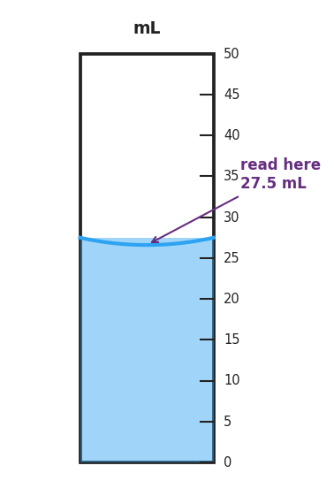

01 Phenomenon
Three students measure the same pencil with different rulers and write down their results: one writes 15 cm, the next writes 15.0 cm, and the third writes 15.00 cm. Then a calculator divides two measured numbers and displays 15.2837 cm on the screen.
02 Driving question
How precise are we actually allowed to claim our answer is?
03 Notice & wonder
| I notice… | I wonder… |
|---|---|
Turn & Talk #1: Student A wrote 15 cm and Student C wrote 15.00 cm — they measured the same pencil. In one sentence, describe what is different about those two measurements. Do not use the word “zeros” in your answer — describe what the measurements claim about the ruler.
04 Initial model
Before your teacher names any rules: look at the figure your teacher is projecting on the screen.

What is the reading on the cylinder? _____________ mL
Which digits did the instrument tell you for certain? _______________
Which digit did you estimate? _______________
How many significant figures does this reading have? _____
05 Investigate
Part 1 — Sig-Fig Sorting Cards
Your group will receive a set of cards. For each value, count the significant figures and write your reasoning in the table. Your group works on the vertical surface — write large enough for others to see.
| Value | How many sig figs? | Reasoning (which digits count, and why?) |
|---|---|---|
| 34.7 | ||
| 0.0040 | ||
| 1500 | ||
| 1500. | ||
| 0.03080 | ||
| 102.0 |
Gallery walk question: After you look at another group’s board, write one idea you want to borrow and one you want to challenge.
Borrow: _______________________________________________
Challenge: _______________________________________________
Part 2 — Scientific Notation Conversions
Convert each value. Show your reasoning.
| Standard notation | Scientific notation |
|---|---|
| 6,420,000 | |
| 0.000452 | |
| 0.000 000 000 911 (mass of an electron in kg, approx.) |
| Scientific notation | Standard notation |
|---|---|
| 6.02 × 10²³ | |
| 3.5 × 10⁻⁴ |
Connection to precision: How many significant figures does 6.42 × 10⁶ have? _____ How do you know? _______________________________________________
06 Make it make sense
Count the significant figures in each value. Write your count and one-line reasoning.
Value Sig figs Reasoning 0.0040 1500 1500. 0.03080 102.0 A calculator gives the result 48.7263 cm for a measurement that was made with two tools: one that can report to the nearest 0.1 cm, and one that can report to the nearest 1 cm. Round the result to the appropriate number of significant figures and explain your reasoning.
Rounded result: _____________ Reasoning: _______________________________________________ _______________________________________________
Convert the following to scientific notation.
0.000452 → _______________________________________________
92,500,000 → _______________________________________________
07 Key vocabulary
- significant figures
- the digits in a measurement that carry meaning: all the digits the instrument reported with certainty, plus one estimated digit; when you write 27.5 mL, all three digits are significant because they all came from reading the instrument
- scientific notation
- a way of expressing a number as a coefficient between 1 and 10, multiplied by a power of ten (e.g., 6,420,000 = 6.42 × 10⁶); scientific notation makes the sig-fig count explicit and handles very large and very small quantities without strings of placeholder zeros
- precision
- the level of detail a measurement claims; a reading of 27.5 mL is more precise than 28 mL because it claims a tenth-of-a-milliliter level of certainty; precision is communicated by the number of significant figures recorded, and it must honestly reflect what the instrument can support
Use each term in a sentence about today’s measurement or investigation. Do not copy the definition — describe something you observed or did.
significant figures: _______________________________________________ _______________________________________________
scientific notation: _______________________________________________ _______________________________________________
precision: _______________________________________________ _______________________________________________
08 Revise your model
Return to your Initial Model reading of the cylinder (27.5 mL). Now add:
Write 27.5 mL in scientific notation: _______________________________________________
Write a revised sentence explaining what the reading claims about the instrument — how precise is the cylinder?
Then finish this Because / But / So sentence:
A calculator answer of 15.2837 cm is a false precision claim because __________________________________________, but __________________________________________, so __________________________________________.
09 Exit ticket
- How many significant figures are in 0.03080?
- Write 48,500,000 in scientific notation.
- Round 7.86342 to 3 significant figures.
10 Explore further
- Sig-fig sorting cards: Sets of 10–12 measured values (including tricky cases: leading zeros, trailing zeros with and without a decimal point, captive zeros) written on index cards or half-sheets. Groups sort them into categories: "easy to count," "tricky," "I'm not sure." Then they count sig figs for each, compare across groups, and surface the rules inductively.
- Estimate-the-last-digit measuring: Students use the graduated cylinder figure (or a real cylinder at a lab station) to practice reading the instrument one digit past the last marked scale division. The `figures/reading_precision.png` image (27.5 mL in a 50 mL cylinder) is used as a whole-class anchor.
- Scientific notation conversion practice: Students convert a set of values both ways — standard to scientific and scientific to standard. Values include Avogadro's number, atomic radii, and masses from the 2025 Reference Tables, giving the notation meaning before it is tested.